Mystic Box
La experiencia va contigo.
Joyería con piedras naturales, aromas y elementos artesanales reunidos alrededor de una intención. Una experiencia para llevar contigo y volver a ella cuando quieras.
Descubrir Mystic Box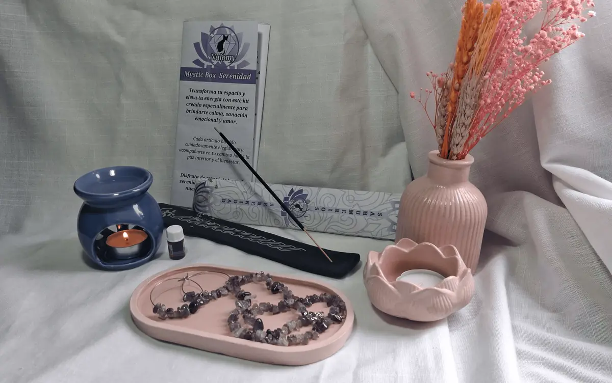
Creaciones con significado para regalar o consentirte.
En Nalomy lo hacemos así.
La experiencia va contigo.
Joyería con piedras naturales, aromas y elementos artesanales reunidos alrededor de una intención. Una experiencia para llevar contigo y volver a ella cuando quieras.
Descubrir Mystic BoxTú vuelves a la experiencia.
Piezas creadas para transformar un espacio en un rincón especial, donde puedas detenerte, conectar y disfrutar de tus momentos.
Explorar Artesanías
Una experiencia para llevar contigo.
Combinamos joyería con piedras naturales, aromas y elementos artesanales
alrededor de una intención:
una forma de acompañarte a diario y sostenerte en los momentos de desafío.
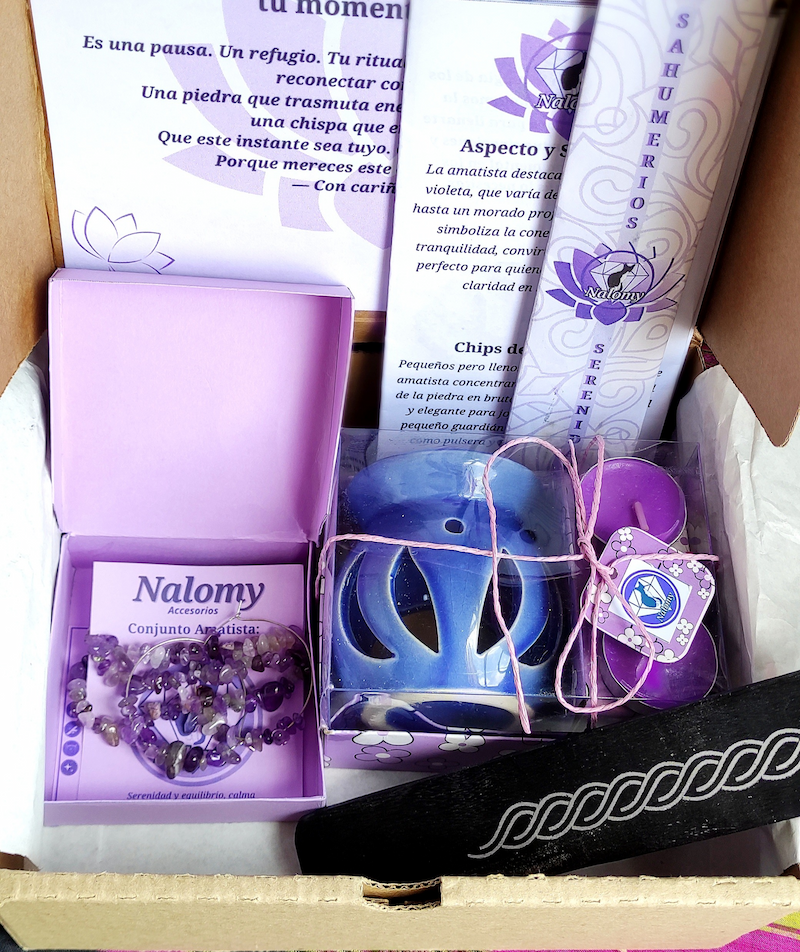
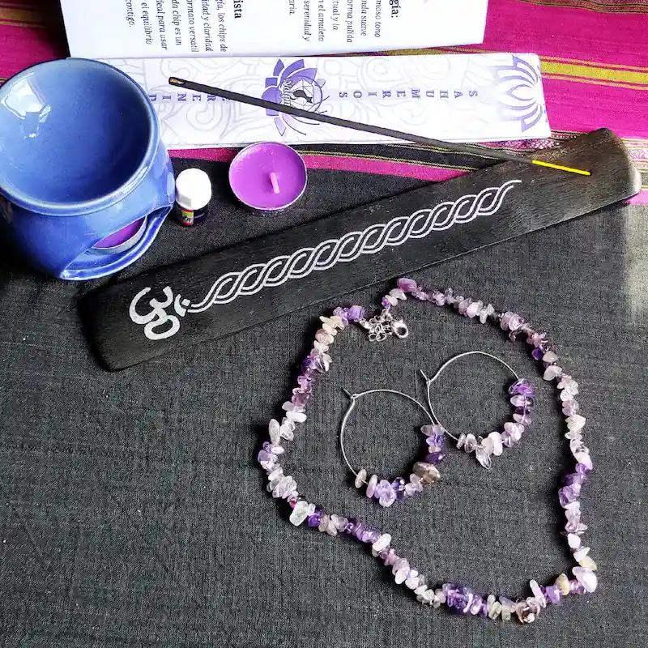
Intención: Calma • Descanso
Piedra: AMATISTA
A veces no necesitas hacer más.
Solo regalarte un momento para bajar el ritmo.
La Mystic Box Serenidad reúne todo lo necesario para crear tu propio ritual de calma y llevar
contigo su intención
durante el día.
Hay momentos en los que simplemente necesitas bajar el ritmo y regalarte unos minutos para ti.
La Mystic Box Serenidad fue creada para acompañar ese momento. Enciende tu hornito, elige tu aroma, prepara tu espacio y disfruta de un pequeño ritual de calma.
Sin prisas. Sin presiones. Simplemente un momento para parar, respirar y volver a conectar contigo.
Después, tu conjunto de amatista va contigo durante el día, como un recordatorio de esa serenidad que quieres conservar.
Ese momento es tuyo. Tú decides cómo disfrutarlo.
¿Qué incluye la caja?:
Versiones disponibles:
¿Tienes dudas?
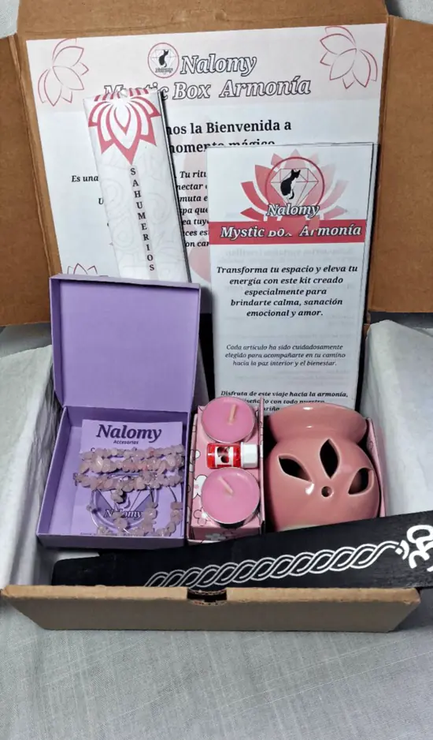
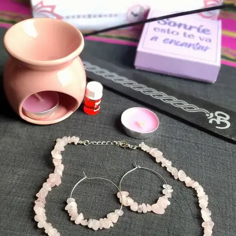
Intención: Autoestima • Apertura
Piedra: CUARZO ROSA
A veces necesitas volver a elegirte.
Recordar todo lo que vales.
Armonía nace para acompañarte a cultivar una relación más amable contigo,
reconocer lo que necesitas y abrirte también a recibir cariño, cuidado y
cosas bonitas.
Hay una diferencia entre dar cariño y permitirte recibirlo.
A veces estamos tan acostumbrados a ocuparnos de todo que olvidamos hacer espacio para nosotros mismos.
Armonía propone un pequeño gesto en esa dirección: elegir algo que te haga bien, disfrutarlo sin prisa y recordar que no necesitas hacer nada extraordinario para merecer cuidado.
Tu cuarzo rosa puede acompañarte durante el día como ese pequeño recordatorio.
Porque también mereces recibir el mismo cariño que tantas veces entregas.
¿Qué incluye la caja?
Versiones disponibles:
¿Tienes dudas?
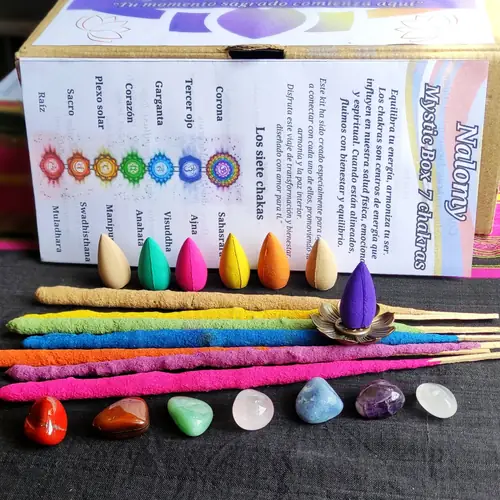
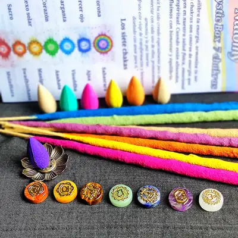
Intención: Conexión • Renovación
Piedras: 7 piedras naturales
Siete piedras, siete centros energéticos, siete formas de conectar contigo.
Una experiencia para explorar tu energía y descubrir aquello con lo que
sientes mayor conexión.
La Mystic Box 7 Chakras reúne las piedras asociadas a cada chakra para que
puedas trabajar con una intención concreta o simplemente dejarte guiar por
aquella que más te atraiga.
Cada chakra representa un aspecto diferente de nuestra energía.
Por eso esta Box no está pensada para utilizarla siempre de la misma manera.
Puedes trabajar con las siete piedras juntas, elegir una según lo que quieras cultivar en ese momento o dejarte llevar por aquella que más te atraiga.
La guía de meditación te propone un mantra para cada chakra y el tríptico te acompaña en el ritual de limpieza y activación de tus piedras.
Puedes meditar con ellas, crear tu propio ritual, llevarlas contigo o simplemente tenerlas cerca.
No hay una única manera de conectar con tu energía. Explora, siente y encuentra la tuya.
¿Qué incluye la caja?
Elige tu versión
¿Tienes dudas?
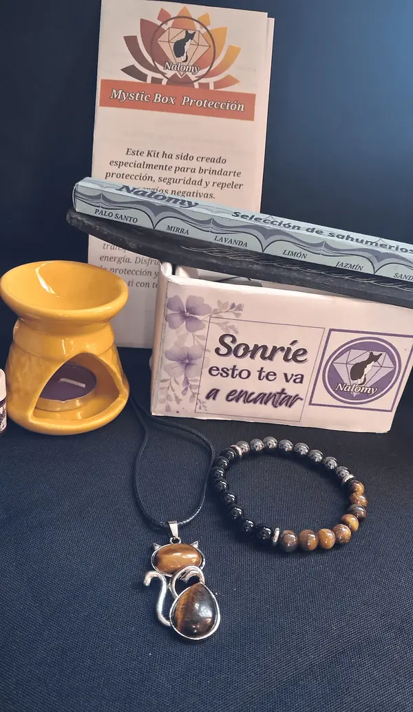
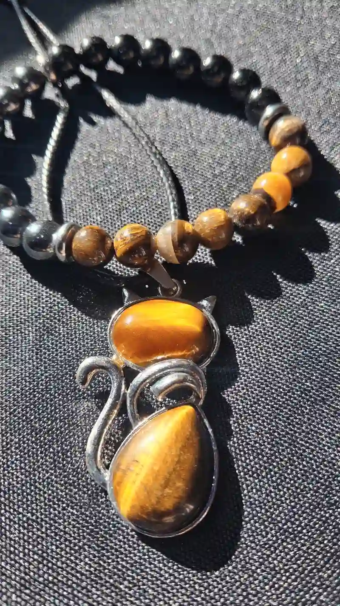
Intención: Protección • Éxito • Manifestación
Piedras: Ojo de Tigre, Hematites y Turmalina Negra
Hay momentos en los que necesitas sentirte fuerte, segura y preparada para avanzar.
Conectar con tu fuerza también es una forma de cuidarte.
La Mystic Box Protección fue creada para acompañarte a fortalecer tu confianza,
mantener cerca tus intenciones y recordar todo aquello que eres capaz de construir.
Todos tenemos algo que queremos conseguir.
Puede ser un proyecto, un nuevo comienzo, una decisión importante o simplemente ese objetivo que llevas tiempo queriendo alcanzar.
Protección te invita a crear un momento para conectar con esa intención, preparar tu espacio y recordar la fuerza que ya existe en ti.
Enciende tu hornito, elige tu aroma y regálate unos minutos para bajar el ruido, enfocarte y conectar con aquello que quieres cultivar.
El Ojo de Tigre, los Hematites y la Turmalina Negra acompañan este momento como símbolos de fuerza, confianza y protección.
Después, tu conjunto va contigo durante el día, cerca de ti, como un recordatorio de tu intención y de aquello que quieres alcanzar.
Porque creer en lo que quieres también es una forma de empezar a construirlo.
¿Qué incluye la caja?
¿Tienes dudas?
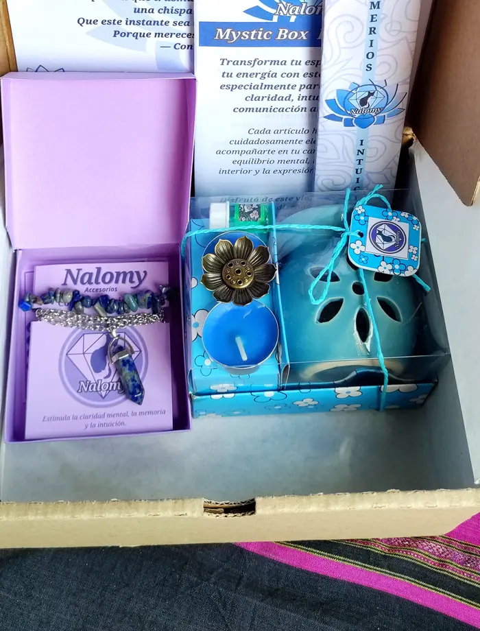
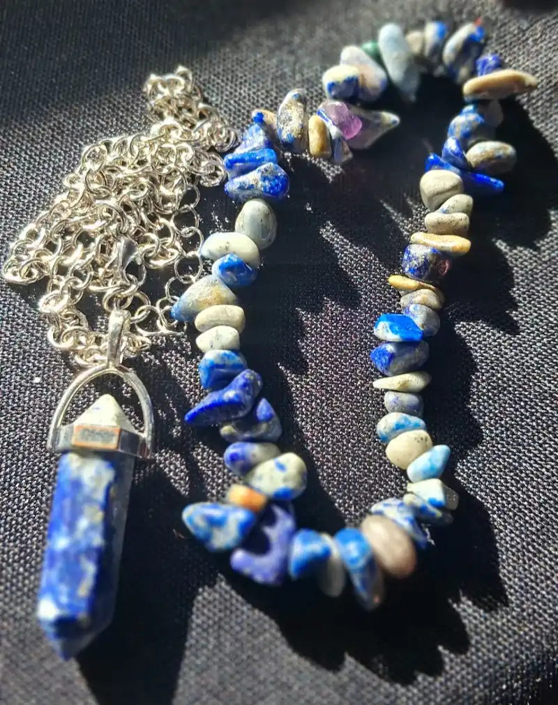
Intención: Intuición • Expresión • Conexión
Piedra: LAPISLÁZULI
A veces solo necesitas hacer un poco de silencio para escucharte.
Confiar en lo que sientes y darle espacio a tu propia voz.
La Mystic Box Intuición fue creada para acompañarte a conectar contigo,
confiar en tu intuición y expresar aquello que quieres decir, crear o comprender.
Hay momentos en los que simplemente necesitas hacer una pausa y escucharte.
Dejar un poco de espacio para tus pensamientos, tus ideas, aquello que sientes o esa intuición que a veces aparece antes de que encuentres las palabras.
Mystic Box Intuición nace para acompañarte a conectar con tu mundo interior y darle espacio a tu propia voz.
Puedes crear tu momento de calma, encender tu hornito, elegir tu aroma y dedicar unos minutos a estar contigo, sin ruido alrededor.
El Lapislázuli te acompaña como símbolo de intuición, expresión y conexión, mientras exploras aquello que quieres decir, crear o comprender.
Y cuando llegue el momento de llevarlo contigo, tu conjunto estará cerca, como un recordatorio de que puedes confiar en tu propia voz y escuchar aquello que nace de ti.
Porque expresarte también es una forma de encontrarte.
¿Qué incluye la caja?
¿Tienes dudas?
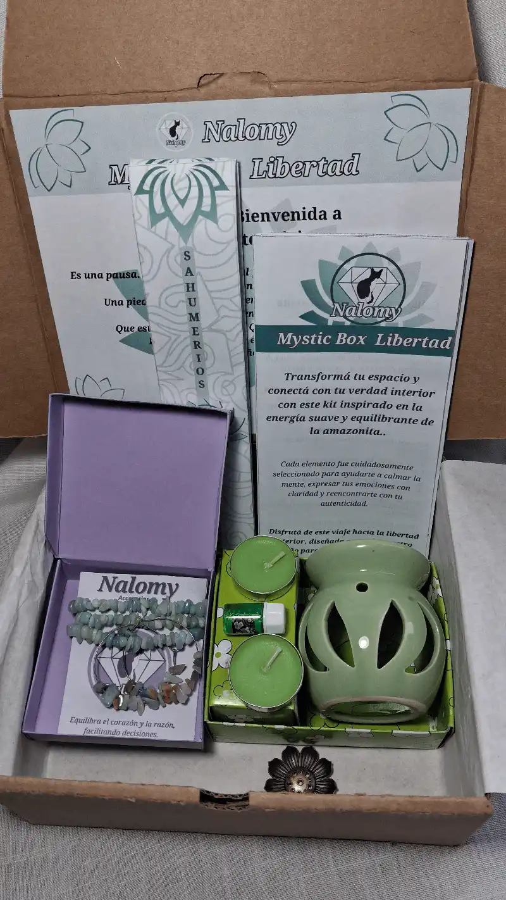
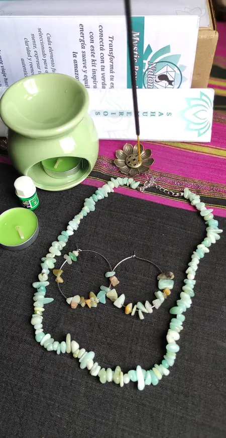
Intención: Libertad • Apertura • Fluir
Piedra: AMAZONITA
A veces simplemente quieres hacer espacio para algo nuevo.
Soltar un poco, respirar y permitirte avanzar a tu manera.
La Mystic Box Libertad fue creada para acompañarte cuando necesitas movimiento,
apertura y una sensación de mayor ligereza.
Hay momentos en los que necesitas parar un poco, respirar y dejar espacio para aquello que todavía no sabes cómo será.
Quizás estás comenzando una nueva etapa, tienes ganas de cambiar algo, quieres explorar otro camino o simplemente necesitas recuperar esa sensación de movimiento y libertad.
Mystic Box Libertad nace para acompañarte en esos momentos en los que quieres soltar lo que ya no necesitas y hacer espacio para lo nuevo.
Puedes preparar tu momento, encender tu hornito, elegir tu aroma y regalarte unos minutos para bajar el ruido y conectar contigo.
La Amazonita te acompaña como símbolo de libertad, apertura y expresión, recordándote que siempre puedes elegir qué quieres cultivar y hacia dónde quieres dirigir tu energía.
Puedes llevar tu conjunto contigo durante el día o tenerlo cerca en ese espacio que has creado para ti.
A veces, hacer espacio también es una forma de avanzar.
¿Qué incluye la caja?
Versiones disponibles
¿Tienes dudas?
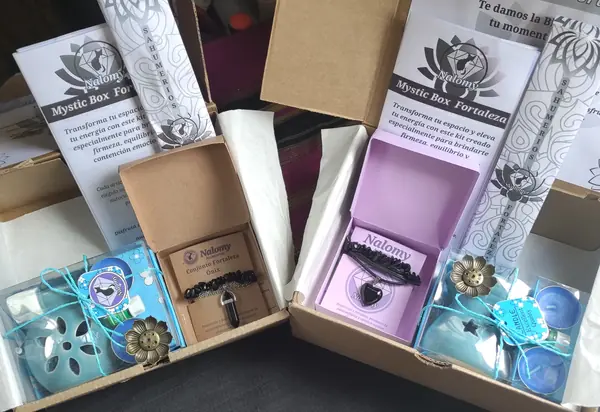
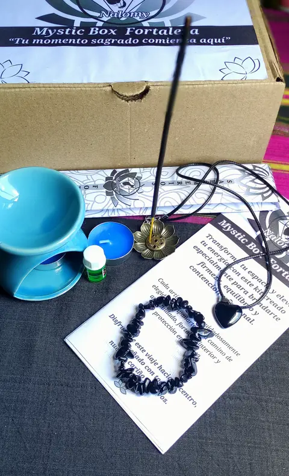
Intención: Fortaleza • Protección
Piedra: ÓNIX
Hay momentos en los que necesitas sentirte firme, sostenerte y recordar todo lo que eres capaz
de atravesar.
Tu fuerza también está en saber cuidarte mientras avanzas.
La Mystic Box Fortaleza fue creada para acompañarte a conectar con tu fuerza interior,
recuperar tu centro y afrontar cada nuevo desafío a tu manera.
Todos atravesamos momentos en los que necesitamos sentirnos un poco más fuertes, centrados y seguros de nosotros mismos.
Puede ser al comenzar un proyecto, afrontar un cambio, tomar una decisión importante o simplemente cuando la vida te pide más de lo que esperabas.
Mystic Box Fortaleza nace para acompañarte en esos momentos, creando un espacio donde puedas parar, respirar y recordar la fuerza que ya existe en ti.
Puedes crear tu propio ritual, encender tu hornito, elegir tu aroma y regalarte unos minutos para bajar el ruido y volver a tu centro.
El Ónix te acompaña como símbolo de fortaleza y protección, como un recordatorio que puedes llevar contigo cuando necesites conectar con tu firmeza y confianza.
Puedes llevar tu conjunto durante el día o tenerlo cerca en ese espacio que has creado para ti.
Tu fuerza también merece un momento para cuidarse.
¿Qué incluye la caja?
Versiones disponibles
¿Tienes dudas?
Tu idea, tu combinación, tu intención.
Quizás has visto una Mystic Box y ya sabes qué te gustaría cambiar. O quizás tienes una idea completamente diferente. Cuéntanos qué tienes en mente y crearemos contigo una combinación especial.
¿Qué puedes personalizar?
Primero nos cuentas qué tienes en mente. Puede ser una combinación que hayas visto en Nalomy, algo que quieras modificar o una idea completamente nueva.
A partir de ahí buscamos juntos las piedras, piezas y detalles que mejor se adapten a lo que quieres crear.
Tiempo de elaboración
Cada creación personalizada se prepara especialmente para ti. El proceso de elaboración, secado, curado y búsqueda de materiales lleva aproximadamente 10 días hábiles.
El resultado será una combinación creada a partir de tu idea, tus preferencias y la intención que quieras darle.
Porque algunas ideas merecen convertirse en algo hecho especialmente para ti.
¿Tienes dudas?
.webp)
Un regalo con significado empieza por conocer a quién va dirigido.
¿Sigues sin decidirte? No tienes que hacerlo a solas. Cuéntanos para quién es el regalo y qué quieres transmitir. Te ayudamos a encontrar una opción que tenga sentido para esa persona.
Crea un rincón especial con piezas que llenen tu espacio de significado. Cada creación está pensada para acompañar tus momentos de calma, conexión y bienestar.
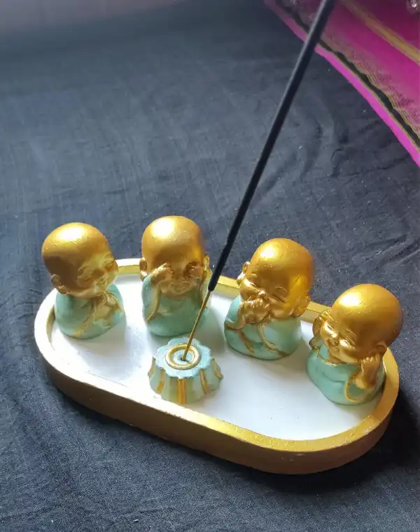
Hay espacios que se sienten diferentes cuando los creamos pensando
en cómo queremos sentirnos en ellos.
Los 4 Monjes Sabios
te invitan a crear un rincón
de calma, presencia y protección en tu hogar.
Los cuatro Monjes Sabios están inspirados en una antigua enseñanza que invita a prestar atención a aquello que vemos, escuchamos y decimos, y a cultivar también el silencio interior.
Cada figura representa una forma diferente de relacionarnos con lo que dejamos entrar y expresamos en nuestra vida.
El Set incluye una bandeja base, un porta-sahumerio diseñado para el conjunto y un tríptico con el ritual de conexión.
Colócalos en ese rincón especial, enciende un sahumerio y regálate unos minutos para ti.
Un espacio cuidado también puede convertirse en un pequeño refugio para volver a ti.
¿Tienes dudas?
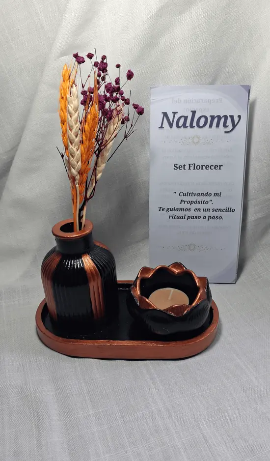
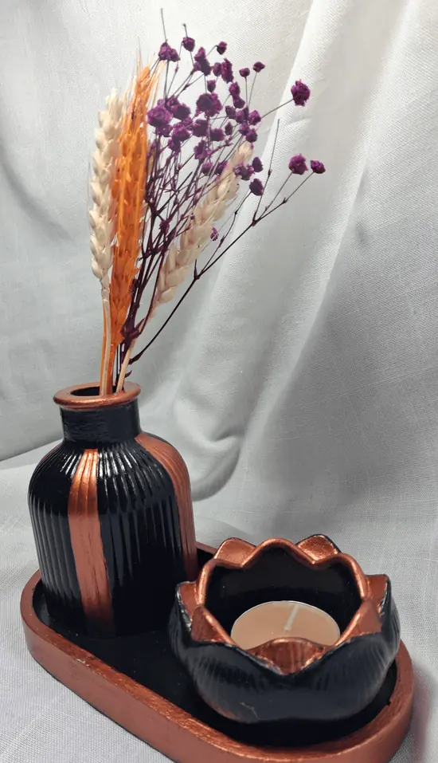
A veces simplemente sentimos ganas de cambiar algo, renovar nuestro espacio
o abrirnos a una nueva etapa.
El Set Florecer
te acompaña a crear ese pequeño rincón
donde celebrar lo nuevo, reconocer lo que has recorrido
y hacer espacio para lo que viene.
¿Qué contiene el Set?
Cada elemento del Set Florecer está pensado para acompañar un momento de renovación y ayudarte a darle un lugar a aquello que quieres celebrar o transformar.
Coloca las piezas en ese rincón especial, enciende la vela y regálate unos minutos para conectar con aquello que quieres celebrar, renovar o dejar entrar en tu vida.
Porque cada nuevo comienzo también merece un pequeño ritual.
¿Tienes dudas?
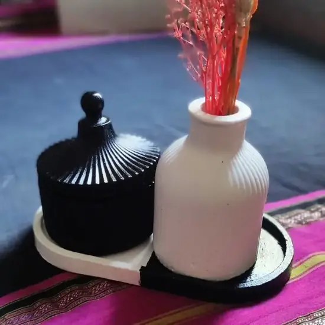
Todos tenemos algo que guardamos porque significa mucho para nosotros.
Una piedra, una moneda, un recuerdo, un regalo...
El Set Armonía
crea un pequeño espacio para guardar
aquello que tiene un significado especial para ti y mantener cerca
todo lo que representa.
¿Qué contiene el Set?
Una pieza central pensada para guardar ese pequeño objeto que tiene un significado especial para ti.
Puede ser una piedra, una moneda, un recuerdo, un regalo o cualquier pequeño objeto que quieras conservar cerca.
El florero, la bandeja y los demás elementos ayudan a crear alrededor de él un rincón bonito, personal y lleno de significado.
El tríptico incluido te invita a conectar con aquello que has elegido guardar y convertir ese momento en un pequeño ritual.
Porque algunas cosas tienen valor por lo que representan, no por lo que cuestan.
¿Tienes dudas?
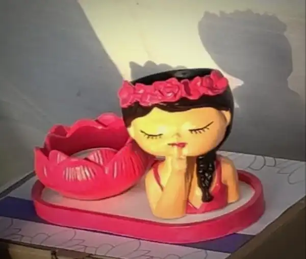
A veces queremos hacer espacio para una intención, un deseo
o simplemente algo que nos ilusiona.
El Set Luz
te invita a crear un pequeño rincón
donde puedas tenerlo presente y volver a él mientras avanzas
hacia aquello que quieres construir.
¿Qué contiene el Set?
La Soñadora representa aquello que imaginas, deseas y quieres dar forma en tu vida. Puedes elegir entre dos poses para darle al Set un significado más personal.
El portavelas te permite incorporar una vela o un sahumerio a tu momento de conexión, mientras la bandeja reúne las piezas en un mismo espacio.
El tríptico incluido te invita a poner en palabras aquello que quieres cultivar y convertir ese momento en un pequeño ritual al que puedas volver cuando lo necesites.
Una intención se vuelve más presente cuando le damos un lugar.
¿Tienes dudas?
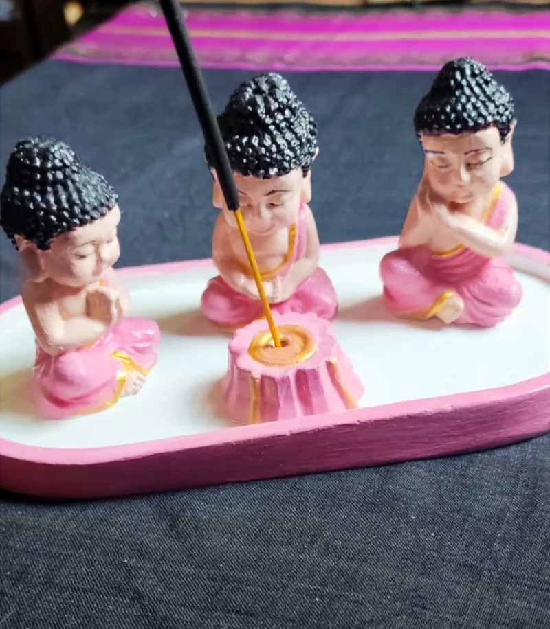
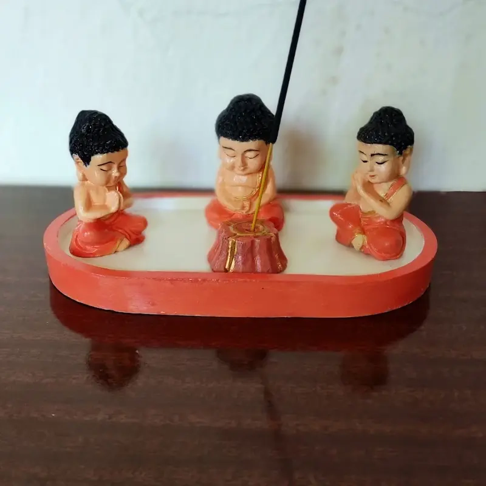
A veces simplemente necesitas bajar el ritmo, hacer una pausa
y volver a encontrar tu centro.
El Set Equilibrio
reúne tres figuras, cada una con un significado,
para crear un rincón que invite a la calma, la gratitud y la presencia.
¿Qué contiene el Set?
Las tres figuras representan diferentes maneras de hacer una pausa y dirigir la atención hacia aquello que quieres cultivar.
La bandeja reúne las tres figuras y el tríptico incluido propone un pequeño ritual para acompañar este momento.
Colócalas en ese rincón especial y deja que cada postura te acompañe según lo que necesites cultivar o simplemente disfrutar ese día.
A veces, encontrar el equilibrio empieza simplemente por hacer una pausa.
¿Tienes dudas?
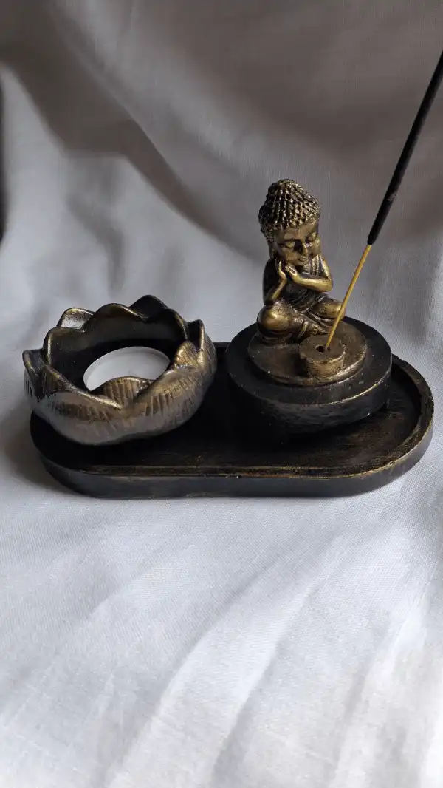
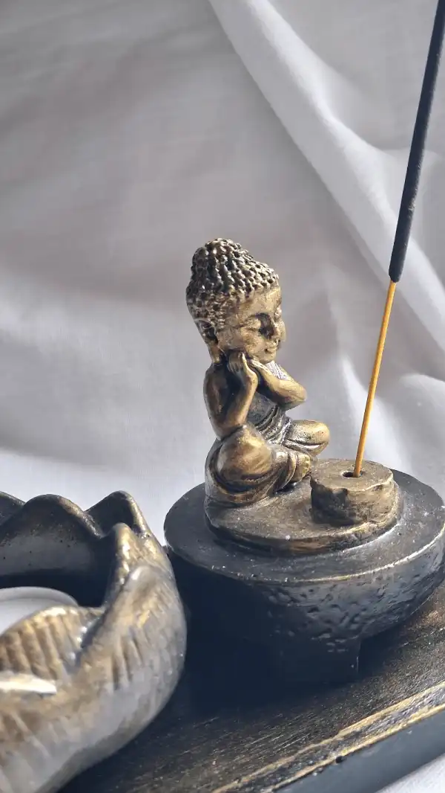
Cuando quieres que tu espacio transmita calma, pequeños detalles
pueden cambiar la forma en que lo vives.
El Set Zen
reúne símbolos de serenidad, protección
y renovación para ayudarte a crear un rincón donde bajar el ritmo
y disfrutar de unos minutos para ti.
¿Qué contiene el Set?
Cada elemento del Set Zen aporta su propio significado al conjunto:
Coloca el Set en un lugar donde puedas verlo, enciende la vela o un sahumerio y regálate unos minutos para bajar el ritmo y disfrutar del espacio que has creado.
Un rincón de calma también puede ser una forma de cuidarte.
¿Tienes dudas?
Somos Marcela y Ana, amigas de toda la vida y las personas detrás de Nalomy.
Creamos Nalomy porque creemos que no hace falta esperar una ocasión especial para regalar, regalarte un momento o hacerle saber a alguien que es importante para ti.
Por eso creamos experiencias con significado. Mystic Box para llevar contigo una intención y regalarte un momento; artesanías para crear un rincón especial al que puedas volver cuando quieras; y detalles pensados para acompañar diferentes momentos de la vida.
Todo nace de nuestra pasión por crear, de nuestras manos y de la ilusión de que cada pieza encuentre a la persona indicada. Queremos que, cuando algo de Nalomy llegue a tus manos, no recibas simplemente un objeto bonito, sino una invitación a parar, respirar, conectar contigo y disfrutar de ese momento.
Porque no hace falta que te pase algo especial.
La especial eres tú.
🌸 Marcela y Ana